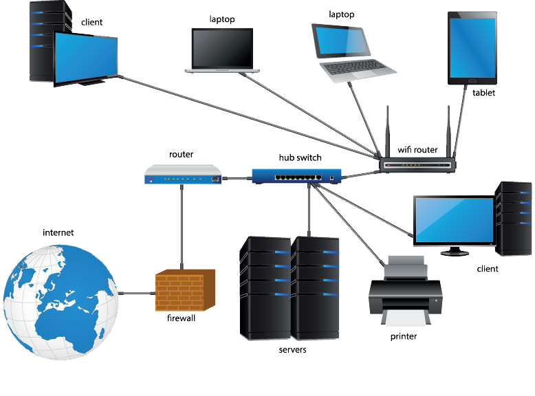

CEIT314 Computer Networks and Communications
This course introduces the fundamental concepts and principles of computer networks. It provides an understanding of different network components and how they function together. The course emphasizes the design and implementation of network software that transforms raw hardware into a fully functional communication system. Real-world networks such as the Internet, ATM, Ethernet, and Token Ring are used as examples to reinforce key concepts and demonstrate various protocols.
- Introduce fundamental concepts and structures of computer networks
- Provide an understanding of Local Area Networks (LANs), Ethernet, and Internet concepts
- Familiarize students with the OSI layers and TCP/IP protocol suite
- Establish the principles of structured cabling and physical/logical network topology design
Course Objectives
Learning Materials
Resources
- Udemy: Introduction to Networking for Complete Beginners
- Computer Networking: A Top-Down Approach by Kurose & Ross
- Computer Networking Course - Network Engineering [CompTIA Network+ Exam Prep]
üìç Beginner
- Coursera: Introduction to Networking
- Networking Concepts and Protocols
üìç Intermediate
Roadmaps
Skills to Learn
- Basic networking concepts (LAN, WAN, protocols, topologies)
- Familiarity with IP addressing and subnetting
- Learning basic troubleshooting techniques
- Configuring network devices such as routers and switches
- Understanding VLANs and DHCP
- Implementing network security basics (firewalls, encryption)
- Advanced network security principles and threat mitigation
- Configuring and optimizing complex network infrastructures
- Understanding and working with cloud networking and software-defined networks (SDN)